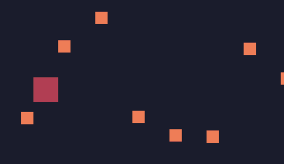

碰撞检测
从网络[1]找到一个碰撞检测方法：
function checkCollision(a, b)
--With locals it's common usage to use underscores instead of camelCasing
local a_left = a.x
local a_right = a.x + a.w
local a_top = a.y
local a_bottom = a.y + a.h
local b_left = b.x
local b_right = b.x + b.w
local b_top = b.y
local b_bottom = b.y + b.h
--Directly return this boolean value without using if-statement
return a_right > b_left
and a_left < b_right
and a_bottom > b_top
and a_top < b_bottom
end
在update中进行碰撞检测，当发现角色为p的player玩家元素碰撞到角色为e的enemy敌人元素时，让enemy敌人消失（从table中移除）
function update()
for i,v in ipairs(gos) do
v.x=v.x+v.vx
v.y=v.y+v.vy
for ii,vv in ipairs(gos) do
if checkCollision(v,vv) then
if v.r=="p" and vv.r=="e" then
vv.die=true --这里标记为该元素已经死亡
end
end
end
end
end
在update中，新增如下代码：
for i,v in ipairs(gos) do
if v.die then
table.remove(gos,i)
end
end
上面的代码是循环找到标记死亡的元素，并删除。

参考[1] https://www.sheepolution.com/learn/book/13